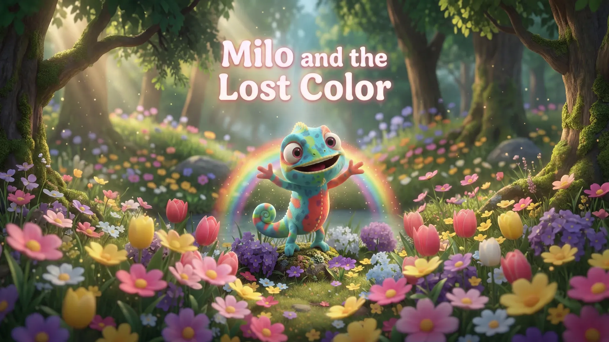
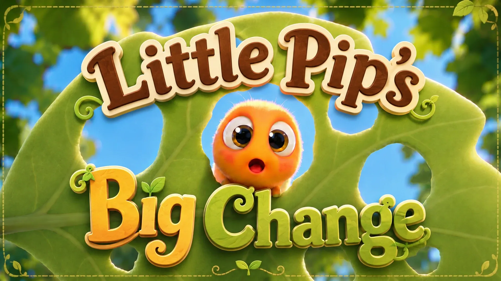

Reading Quiz v4.2
Choose a Story Reader quiz or a shorter Decodable Reader quiz. Earlier versions remain available and unchanged.
Story Readers
Four story-comprehension areas with a lower-load, step-by-step setting question.

Milo and the Lost Color
Choose Milo’s setting clues step by step, then follow the key situation, action, and full story sequence.

Little Pip's Big Change
Choose Pip’s setting clues step by step, then connect sleepiness, transformation, and the whole story flow.
Phonics & Decodable Readers
Short four-question checks focused on letter recognition or the book’s decoding target.
A–D Letter Check
See or hear one letter and choose the matching uppercase or lowercase form.
Tim, Fish and Pig
Listen for short i, complete one word, and choose the picture or word you hear.
Can or Can't
Listen and choose, complete one sentence, then match a picture with its sentence.
v4.2 is a separate pilot. The original v4 alphabet quiz, v4.1 Decodable Reader quizzes, and v3 Story Reader quizzes remain unchanged.